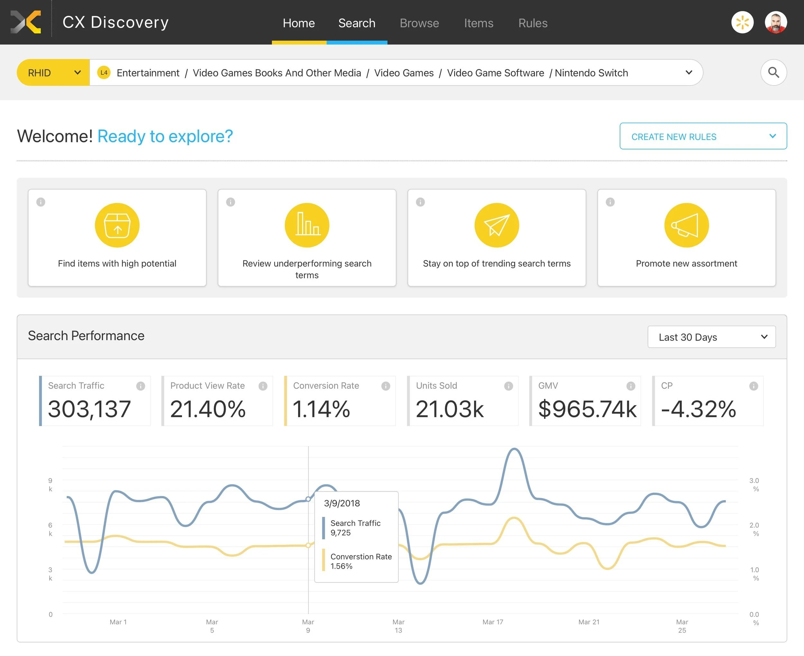
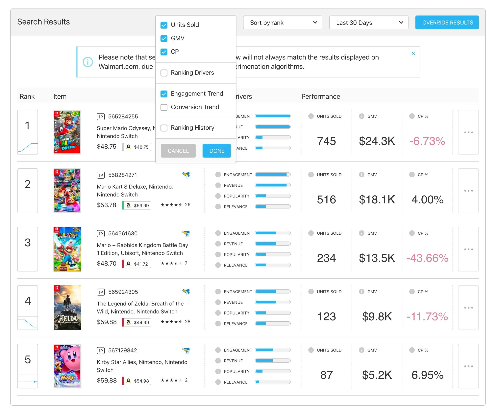

Walmart An internal analytics tool that gives marketing and merchandising teams a clear view of performance across 75 million products, shaped by continuous usability testing.


I.
How can a retailer that sells 75 million different items get a 10,000-foot view of product performance? Walmart’s marketing and merchandising teams relied on a patchwork of tools to understand how their categories were performing. We partnered with them to design an internal tool that brings category performance, search keywords and digital shelf data into one place, so teams can spot what needs attention and act quickly. We tested with users throughout and fed findings back into the design in near real time, which kept the tool focused on the decisions people actually make every day.
II.
Start with what moves the numbers. The landing page leads with a small set of key actions, above a chart of search traffic and conversion over time, so users start with what will improve their numbers.
III.
An information-dense interface gives marketers control over their top tasks, using their own metrics and terminology.
IV.
Outcomes. One view of category performance, keywords and digital shelves across 75 million items. A testing rhythm that turned user feedback into design changes in near real time. And reusable audience profiles and an insights database that outlived the project.
I designed the tool’s end-to-end experience, from landing page to detailed performance views; planned and ran moderated usability tests and quick-turn readouts; created reusable audience profiles; and helped plan the experience for future suggested-actions features.